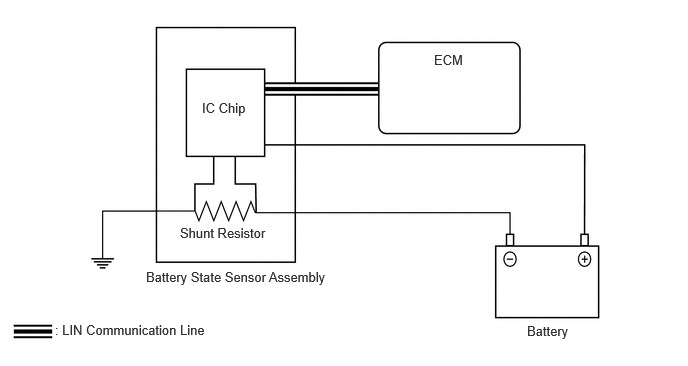

| Last Modified: 10-07-2025 | 6.11:8.1.0 | Doc ID: NM100000002GOPA |
| Model Year Start: 2024 | Model: Tacoma | Prod Date Range: [12/2023 - ] |
| Title: T24A-FTS (BATTERY / CHARGING): CHARGING SYSTEM: BATTERY SENSOR; 2024 - 2026 MY Tacoma [12/2023 - ] | ||
BATTERY SENSOR
CONSTRUCTION
(a) The battery state sensor assembly is installed to the negative (-) battery terminal and outputs the state of the battery based on the input/output current, voltage, temperature, SOC (State of Charge), SOH (State of Health), SOF (State of Function) and self-diagnosis results to the ECM via LIN communication.
(b) To detect the current, a shunt resistor installed inside the battery state sensor assembly is used to convert and calculate the voltage generated in the shunt resistor due to the battery charge and discharge current.
(c) The battery temperature is calculated from the resistance value of the thermistor built in the battery state sensor assembly.
